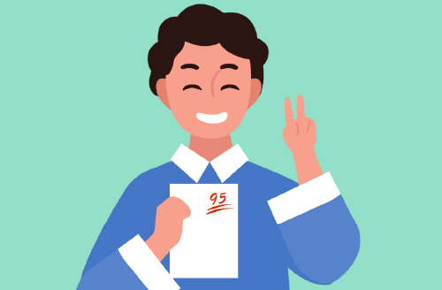

师生风采
elegant demeanour
老师们一路同行
帮孩子找到更优秀的自己

-
Adolescent
rebellionA同学：青春期叛逆问题
孩子青春期叛逆主要表现就是和家长对着干，当父母一味的讲道理，要求孩子听从管教和安排时，
孩子会出现强烈的逆反情绪，说什么不做什么，如果父母强行管制有些孩子会强烈反抗。解决方案
专业老师和家长有效沟通，改变和孩子的相处过程；心性成长课理解孩子背后的感受，正确引导。
 成效
成效家庭氛围越来越和谐，孩子能感受到父母的爱，父母看到孩子在家里、学校的改变给予认可，孩子学习成绩逐渐提高。
-
Puppy love
B同学：早恋问题
孩子在上初中阶段由于生理心理快速发展阶段会出现情窦初开，会蒙生对周围异性同学朋友有别于以前
的好感，孩子会过于沉浸在这种美好感受中而忽略了学习，一但进一步发展出现了矛盾会严重影响学业。解决方案
嘱咐家长不要简单制止而要以接纳的态度耐心和孩子沟通，了解进展的程度；心性成长课告诉孩子这种体验是进入青春期普遍的心理发展需要，让孩子体检式的感觉到早恋会占用的时间和对学习的影响，举例告诉孩子最佳的恋爱阶段才会有美好的体验和结果。
成效孩子得了来自家长和老师的理解和接纳，敞开心扉的表达了自己的感受，了解了自己现阶段的情感体验会影响学习的时间，自觉的恢复到同学关系并彼此鼓励对方现阶段学生时代要努力学习。
-
Internet addiction
C同学：网瘾问题
随着网络的快速发展，手机成了生活、学习、娱乐不可或缺的电子产品，很多家长因为孩子手机不离手而苦恼，为了让孩
子不影响学习，哄也哄了，劝也劝了，有的甚至砸了手机、断了网，依旧解决不了孩子对手机的依恋。
解决方案
大多数孩子沉迷在虚拟世界是因为与现实生活没有很好的联接，修复亲子关系改善家庭氛围是第一步，心性成长课深入沟通了解孩子内心世界的需求，给予接纳，发现孩子的特长和喜好，正确引导，改变认知方向。
成效孩子愿意尝试除了手机游戏以外的努力带来的成果，逐渐重视学习，在群体中恢复和同学的联接。
-
Interpersonal
relationshipsD同学：人际关系问题
人际关系问题分二种：一种是不知道怎么和同学相处交往，没有朋友被孤立。另
一种是具有功击性，和同学相处比较敏感，稍不合意则会武力解决。解决方案
这种问题的孩子大多数是原始的安全感建立的不完善。首先要和家长沟通了解孩子童年成长经历，心性成长课打开孩子的内心找到行为问题的深层原因，疏通负性情绪，教会孩子与同伴正确的相处方法，把孩子负性能量转化成正性的自我探索。
成效孩子释放了负性能量，知道了与同伴正确相处的方法，在集体中找到了存在的价值，愿意自发做出自己当下的努习，学习成绩显著提高。
-
Lack of learning
motivationE同学：学习动力不足问题
许多孩子每天学习状态勉强应付，补课很多年成绩一直没有提升，主要原因没有
内在自发的学习动力。解决方案
孩子对学习沒兴趣不愿持续付出努力是因为没有清晰的目标为导向，和父母沟通不要否定孩子心中的向往，哪怕不成熟也要珍视，正确引导。心性成长课以孩子接受的方式启发孩子内心未来优秀自己的呈现，以目标为导向，引发孩子做出现阶段努力的自觉性。
成效孩子在被信任接纳的环境下愿意为遇见未来优秀的自己而努力，不但在学习成绩，在其他方面同样出现了向好的表现。
-
Test
anxietyF同学：考试焦虑的问题
有一部分孩子平时成绩比较好，一到正式考试就发挥不出自己真实的水平，严重时还会出现各种
躯体化的症状。解决方案
首先询问父母孩子过往有没有躯体疾病以及成长过程中的环境和主要陪伴的亲人的性格特点。通过心性成长课让孩子把过多的外部关注横向比较转移到当下的自身努力上，了解孩子每门功课的学习方法就不足及漏洞给予合理的改进建议。
成效孩子注意力调整到运用正确的方法进行当下的努力上，减小了外部比较的消耗，躯体化症状得以缓解，考试状态明显改善。
-
Inattention
G同学：注意力不集中多动的问题
低年龄的孩子出现注意力不集中的问题，这里需要辩别有的是因为孩子聪明短时间内听懂了新课
就不再注意听讲，另一种情况是孩子由于偏科或从小家长管理过于严格而积聚的心中的不满，通
过行为上的多动去平衡内心的不安。
解决方案
8岁之前的孩子可以进行系统训练辅助调整，主要需要家长配合关注孩子好的表现哪怕是些许的进步，而不要只是不断生硬制止，给孩子安排力所能及的职务，让孩子在为大家服务承担责任的过程中释放压力，多进行孩子喜欢的体育运动；心性成长课进行沙盘游戏治疗，通过投射发现引发孩子行为问题的主要原因进行疏导。
成效孩子通过一段时间的调整明显的有了遵守规则的意识，能够更长时间静下来进行学习和其他活动。
-
Lack of confidence
H同学：自信心不足的问题
自信心不足问题突显在实验班的孩子中，他们因为在优秀的群体中很难突显自己的优势，为自己不能向以往只要努力就能名
列前茅而苦恼，长时间达不到自己的完美要求，出现对自己的过低评价，严重的甚至出现想逃避而厌学的情况。解决方案
这样的孩子需要家长在课余时间允许孩子多休息做一些劳逸结合的活动，而不要再过多督促讨论学习方面的问题，通过心性成长课，调整孩子的认知，降低对自己的绝对化要求，要运用适合自己节奏的学习方式发挥自己的长处，而不是片面和周围群体的比较而严重打击自信心。
成效孩子由于得到劳逸结合的缓解和认知的改变，心情逐步放松下来，能够客观的看到自己的优势和不足，针对自己的节奏察漏补缺，自信心逐步回升。
-
depression
I同学：出现抑郁情绪的问题
疫情过后开学孩子们从在家比较自由的上网课重新回归学校投入紧张的学习生活。很多孩子不适应甚至有的因为考试成绩不理想而出现极端
的想法或行为。孩子出现抑郁情绪要及时干预，否则随着时间的推移，抑郁的情绪会逐渐累加量变到质变，有的转化为抑郁症，极端想法和
行为是抑郁症的典型症状。解决方案
在孩子出现抑郁情绪时及时发现并干予，全方位找出造成孩子抑郁情绪的深层原因，用正确方法处理，完善孩子的社会支持系统，从家长、老师、同学、明友、亲人、专业老师方面给予接纳，理解，支持，及时用专业方法缓解孩子的抑郁情绪。
成效及时发现问题、解决问题、从根源上杜绝了悲剧的发生。